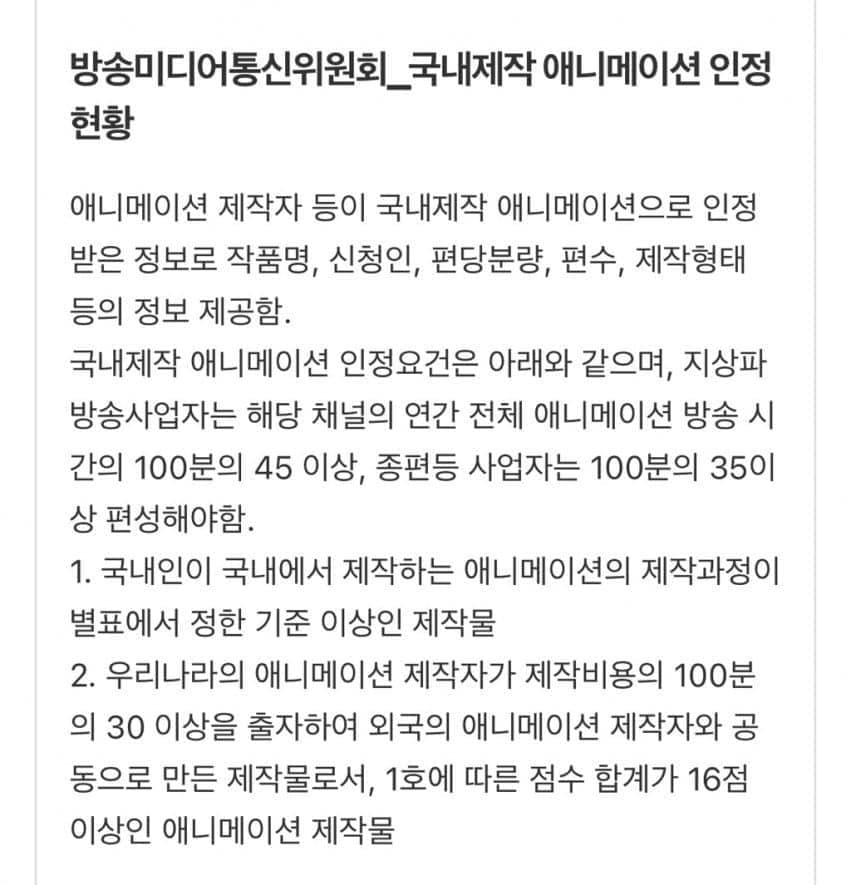
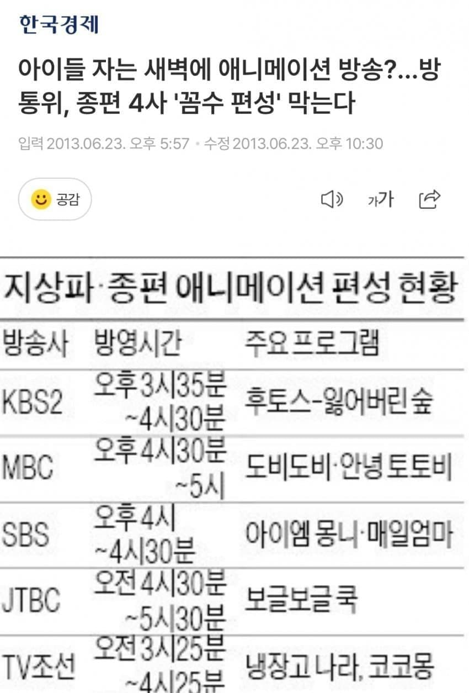
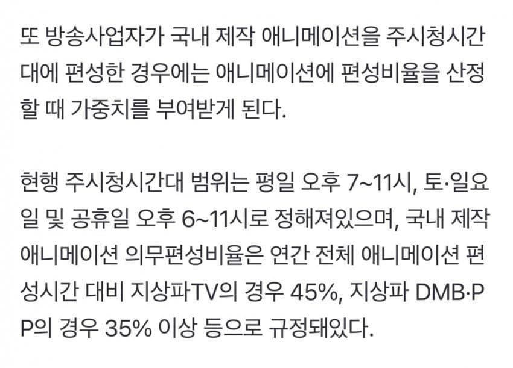
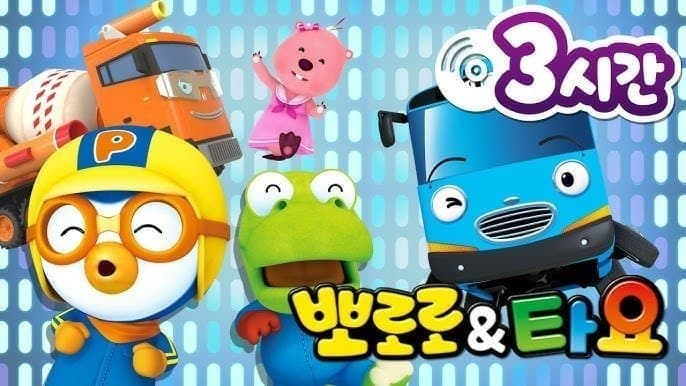
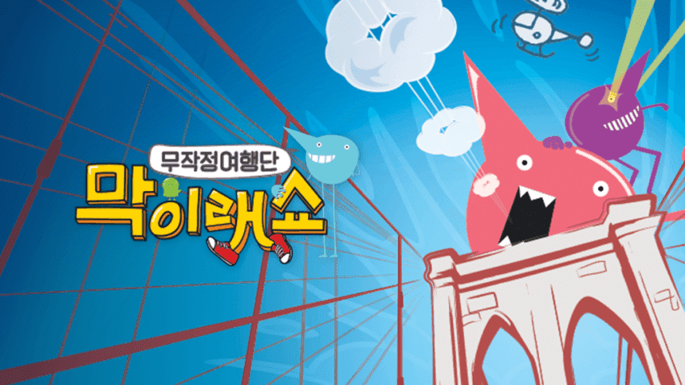
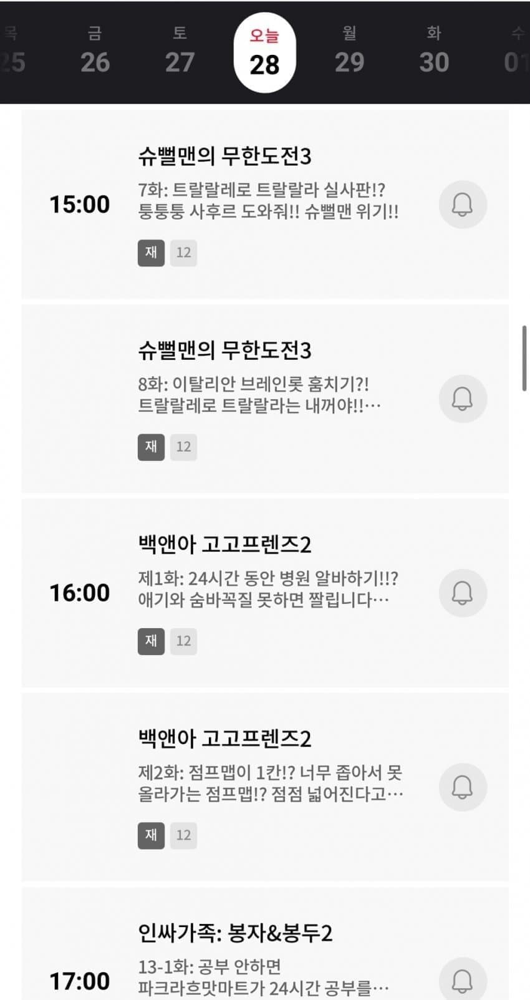
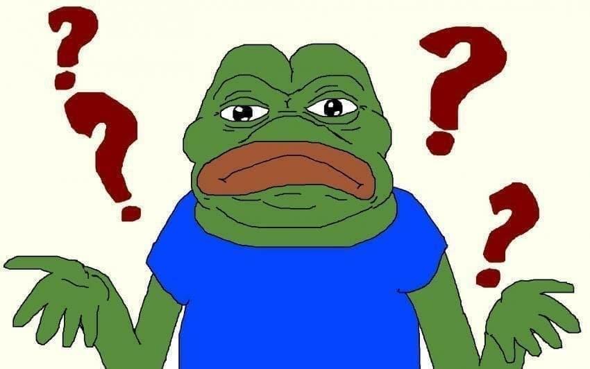
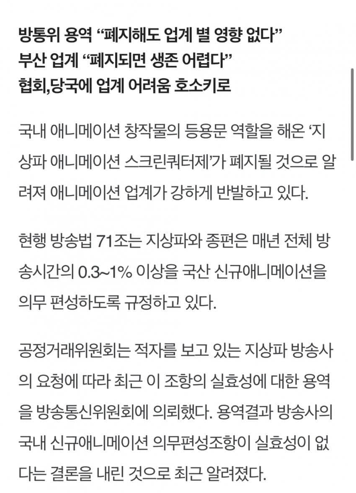

투니버스와 같은 애니메이션 채널들이 몰락하게 된 이유로
ott,전자기기의 보급으로 굳이 찾아 볼 필요가 없다…등을 이유로 드는데…

가장 큰 영향을 끼친건 애니메이션 의무편성 제도였음
국산 애니메이션 쿼터제는 방영시간의 거의 절반 가까운 비유로 편성해야됐고

출범초기부터 14년도까진 국산애니메이션을 새벽이나 아침시간대 틀어버리는 꼼수를 보였지만….
당연히도 철퇴를 맞고

방영시간까지 정해지고 "신작"위주로방영해야된다는 관련법령이 대폭 확대됨
sbs kbs에서 낮시간대에 갑자기 만화트는 이유도 이때문

하지만 국내제작 애니메이션이라 해봐야…..
최근에야 하츄핑이나 신비아파트가 나왔다지만
유아타겟 애니메이션이 강세인만큼 미취학아동이 볼만한 작품밖에 없는데
최소 초딩이상 10대들 보라고 만드는 채널에 내내 야로로만 틀수도 없고
이때를 기점으로 투니버스는 유아키즈채널로 변경했을만큼 타격이 상당했음

투니버스 암흑기를 열었다 할 정도인 막이래쇼 같은 프로그램을 자체제작해서 방영하는 정성을 보였지만

2020년 들어 그런짓도 귀찮았는지 내내 유튜버 방송만 틀어대는 상황
대여섯시간 내리 이것만 틀고있음

"근데 쟤네들은 애니메이션 인정안되지않음? 그럼 왜 트는거노?"
애니메이션으로 인정되어서 트는게 아니라
"애니메이션 전체방영시간"의 일정비율 채워야하기때문에
애니메이션을 "덜" 틀려고 저런걸 송출하는거임

이처럼 지상파는 알아서 꼼수치고있고 애니메이션 전문채널들은 조금이라도 줄여보겠다고 저런짓 하는데
방통위는 실효성도 없고 ott보급과 시대변화 등으로 폐지하려고 했지만
K-애니 활로를 막지말라는 이유로 반발이 심했고
결국 애니메이션 쿼터제 폐지는 요원해진 상황이다….
댓글
수집 당시 댓글 123개
나도디시콘쓸꺼야 · 11.16 21:35:19
ㅇㅇ · 11.16 21:35:45
ㅇㅇ · 11.16 21:35:46
ㅇㅇ · 11.16 21:35:50
· ㅇㅇ · 11.16 21:35:59
ㅇㅇ · 11.16 21:36:19
· ㅇㅇ · 11.16 21:37:31
· ㅇㅇ · 11.16 21:49:50
· ㅇㅇ · 11.16 21:50:34
ㅇㅇ · 11.16 21:36:38
ㅇㅇ · 11.16 21:37:27
ㅇㅇ · 11.16 21:38:17
ㅇㅇ · 11.16 21:38:18
ㅇㅇ · 11.16 21:38:20
2456778 · 11.16 21:38:21
키리 · 11.16 21:38:25
· 키리 · 11.16 21:39:57
· 키리 · 11.16 21:40:57
· 키리 · 11.16 21:41:59
· 퀸쥴리 · 11.16 22:09:58
· ㅇㅇ · 11.16 23:01:59
ㅇㅇ · 11.16 21:39:51
ㅇㅇ · 11.16 21:40:51
ㅇㅇ · 11.16 21:41:12
· ㅇㅇ · 11.16 21:42:24
ㅇㅇ · 11.16 21:41:42
ㅇㅇ · 11.16 21:41:41
· 소설쟁이 · 11.16 21:50:00
· 소설쟁이 · 11.16 21:50:55
Vegetable40k · 11.16 21:42:31
ㅇㅇ · 11.16 21:43:04
ㅇㅇ · 11.16 21:43:25
ㅇㅇ · 11.16 21:44:15
지지캐 · 11.16 21:44:16
ㅇㅇ · 11.16 21:46:17
ㅇㅇ · 11.16 21:46:28
ㅇㅇ · 11.16 21:48:11
· 소설쟁이 · 11.16 21:53:48
ㅇㅇ · 11.16 21:51:46
ㅇㅇ · 11.16 21:52:35
ㅇㅇ · 11.16 21:52:45
· ㅇㅇ · 11.16 22:05:11
ㅇㅇ · 11.16 21:52:59
ㅇㅇ · 11.16 21:54:08
ㅇㅇ · 11.16 21:54:18
ㅇㅇ · 11.16 21:54:51
· ㅇㅇ · 11.16 22:20:11
· ㅇㅇ · 11.16 22:46:30
ㅇㅇ · 11.16 21:55:53
· ㅇㅇ · 11.16 22:12:47
ㅇㅇ · 11.16 21:55:56
ㅇㅇ · 11.16 21:58:38
ㅇㅇ · 11.16 22:04:10
ㅇㅇ · 11.16 22:06:00
ㅇㅇ · 11.16 22:07:12
ㅇㅇ · 11.16 22:10:31
· ㅇㅇ · 11.16 22:12:13
· ㅇㅇ · 11.16 22:13:07
일본에서 제작함
· ㅇㅇ · 11.16 22:31:32
퀸쥴리 · 11.16 22:14:58
ㅇㅇ · 11.16 22:22:19
ㅇㅇ · 11.16 22:23:40
ㅇㅇ · 11.16 22:26:23
· ㅇㅇ · 11.16 22:31:22
ㅇㅇ · 11.16 22:32:08
논두렁엔딩 · 11.16 22:38:36
· ㅇㅇ · 11.16 22:43:07
ㅇㅇ · 11.16 22:40:08
ㅇㅇ · 11.16 22:41:16
ㅇㅇ · 11.16 22:41:37
ㅇㅇ · 11.16 22:43:19
· ㅇㅇ · 11.16 22:44:59
골동품 · 11.16 22:55:05
ㅇㅇ · 11.16 23:10:35
ㅇㅇ · 11.16 23:19:12
반달곰 · 11.16 23:25:12
찢붕이 · 11.16 23:53:51
ㅇㅇ · 11.16 23:55:53
· ㅇㅇ · 11.16 23:57:25
· 제몸을막만지셨잖아요 · 11.17 00:10:31
ㅇㅇ · 11.16 23:57:12
풀러리 · 11.17 00:04:04
ㅇㅇ · 11.17 00:05:51
환란 전 교회 휴거 · 11.17 00:29:40
주소킹 · 11.17 00:32:17
ㅇㅇ · 11.17 01:00:16
ㅇㅇ · 11.17 02:35:05
ㅇㅇ · 11.17 02:35:09
주소킹 · 11.17 03:39:53
진지험 · 11.17 06:23:16
· ㅇㅇ · 11.17 12:02:52
ㅇㅇ · 11.17 08:00:56
ㅇㅇ · 11.17 09:01:55
ㅇㅇ · 11.17 09:28:24
ㅇㅇ · 11.17 10:13:10
· ㅇㅇ · 11.17 10:13:33
ㅇㅇ · 11.17 12:00:42
ㅇㅇ · 11.17 12:21:20
ㅇㅇ · 11.17 19:07:37
ㅇㅇ · 11.17 19:07:42
100kg아니다 · 11.14 00:55:52
· ㅇㅇ · 11.16 21:32:05
· ㅇㅇ · 11.16 21:37:14
· ㅇㅇ · 11.16 22:18:51
· 월식강아지 · 11.16 22:55:57
· ㅇㅇ · 11.16 23:53:18
· ㅇㅇ · 11.17 00:08:05
ㅇㅇ · 11.16 21:32:31
ㅇㅇ · 11.16 21:32:35
ㅇㅇ · 11.16 21:32:39
ㅇㅇ · 11.16 21:33:00
ㅇㅇ · 11.16 21:33:02
Enter · 11.16 21:33:22
· fklj · 11.16 22:29:16
코마리 · 11.16 21:33:38
ㅇㅇ · 11.16 21:33:39
ㅇㅇ · 11.16 21:33:49
1찍이 좋아하는 쿼터젴ㅋㅋㅋㅋㅋㅋㅋㅋ
· ㅇㅇ · 11.16 21:34:29
경쟁체제????
너내란견이지?!!!
황족 · 11.16 21:33:54
ㅇㅇ · 11.16 21:34:22
ㅇㅇ · 11.16 21:34:51
· ㅇㅇ · 11.16 21:46:45
ㅇㅇ · 11.16 21:34:57